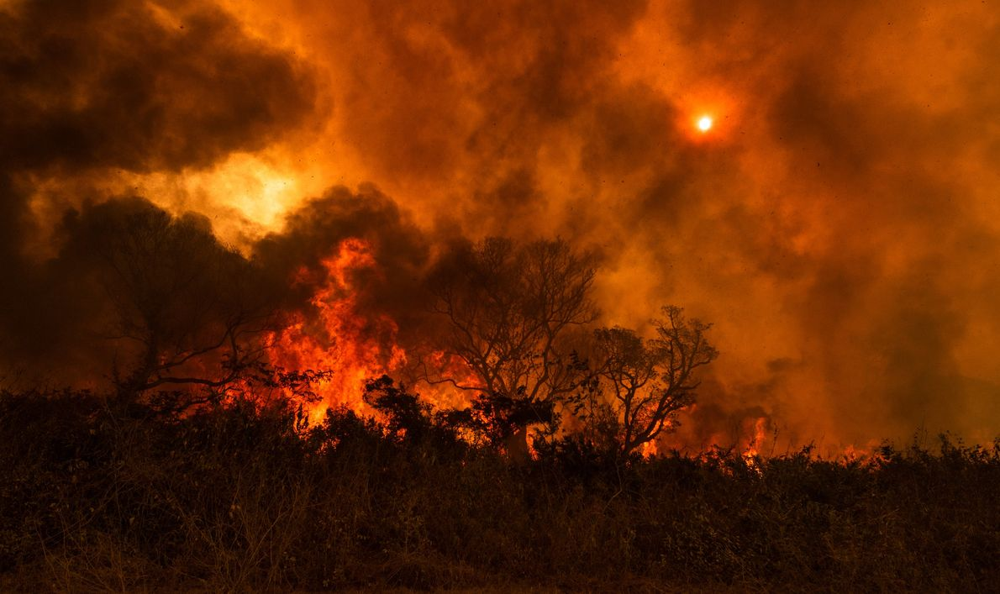
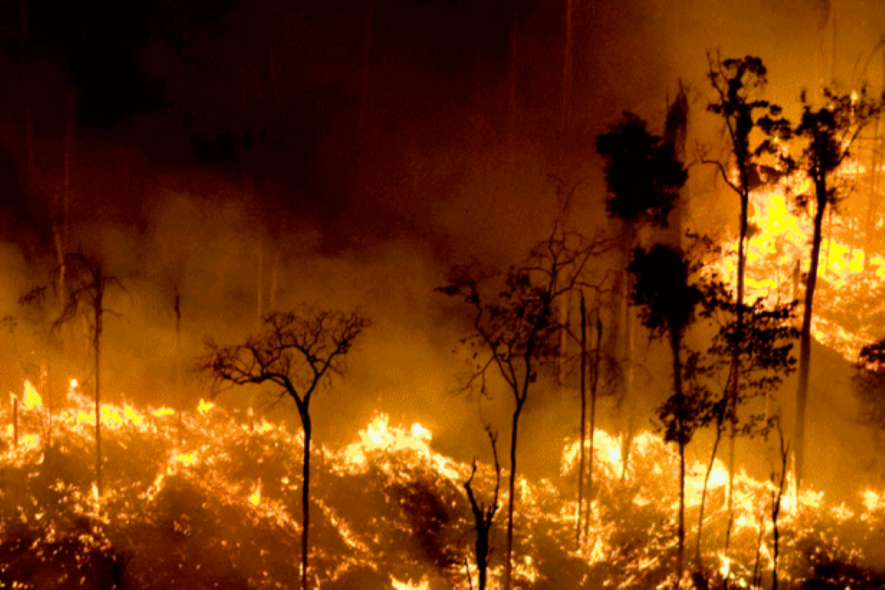

Introdução ao Tema
As queimadas são incêndios controlados ou não que afetam áreas de vegetação, podendo ser causadas por atividades humanas ou fenômenos naturais. São uma questão ambiental crítica, especialmente em regiões como a Amazônia, onde têm efeitos devastadores.

Causas das Queimadas
As principais causas das queimadas incluem:
- Agricultura: Queimadas para a preparação de terrenos.
- Despejo de Lixo: Queimadas ilegais de resíduos.
- Queimadas Ilegais: Atividades criminosas que destroem florestas para extração de madeira ou expansão agrícola.
Consequências das Queimadas
As queimadas têm impactos ambientais e sociais significativos:
- Impactos Ambientais: Destruição da fauna e flora, poluição do ar e degradação do solo.
- Impactos Sociais e Econômicos: Aumento de doenças respiratórias e danos à economia local.
Caso Real: Em 2019, as queimadas na Amazônia aumentaram em 84% em relação ao ano anterior, resultando em uma significativa perda de biodiversidade e destruição de habitat.
Prevenção e Combate
Para prevenir queimadas, algumas medidas incluem:
- Práticas agrícolas sustentáveis.
- Educação ambiental.
- Denúncias de queimadas ilegais.
Em caso de queimadas, é importante saber como agir e onde buscar ajuda. Links para ONGs que atuam no combate às queimadas estarão disponíveis na seção correspondente.
Galeria
 Conscientização
As queimadas não apenas destroem a vegetação, mas também liberam enormes quantidades de dióxido de carbono na atmosfera, contribuindo para as mudanças climáticas. É fundamental que a população esteja ciente dos impactos negativos e atue de forma consciente para preveni-las. Campanhas educativas e o envolvimento da comunidade são essenciais para a proteção do meio ambiente.